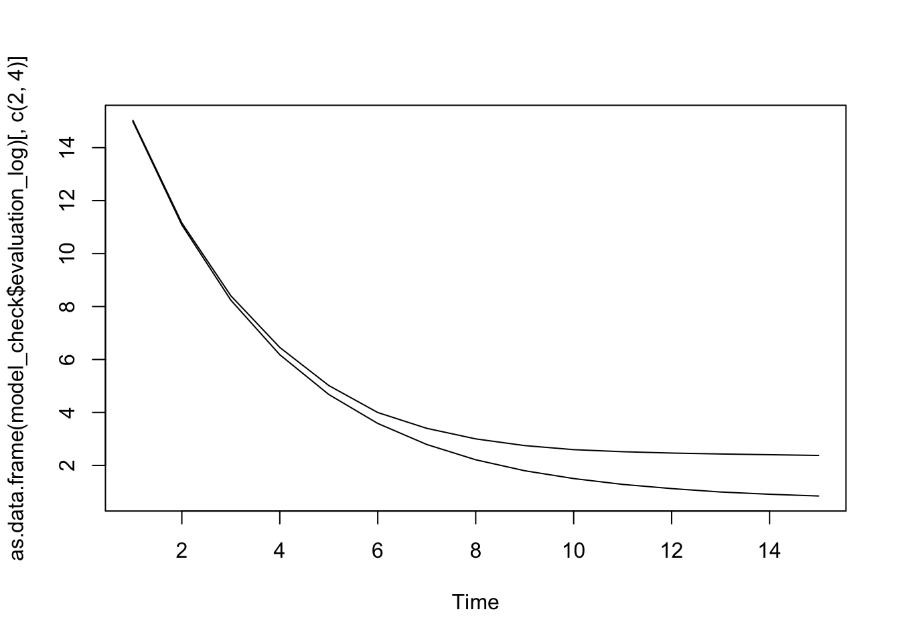
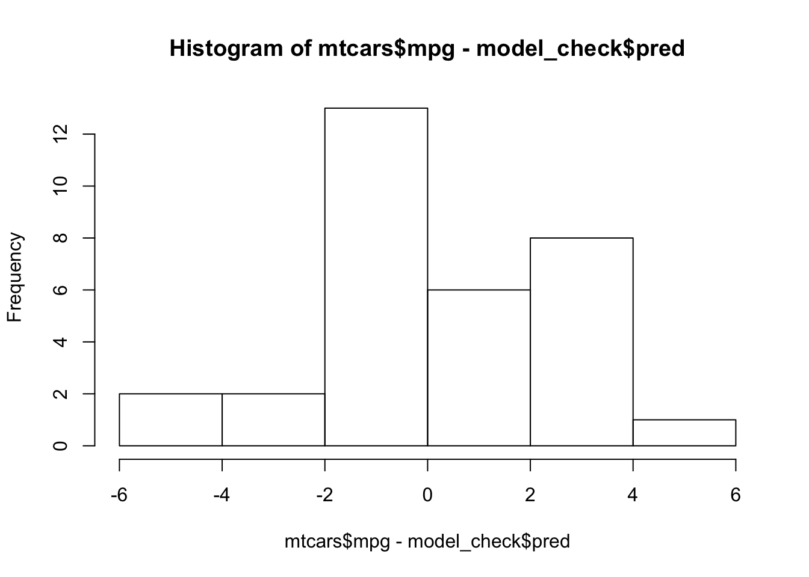
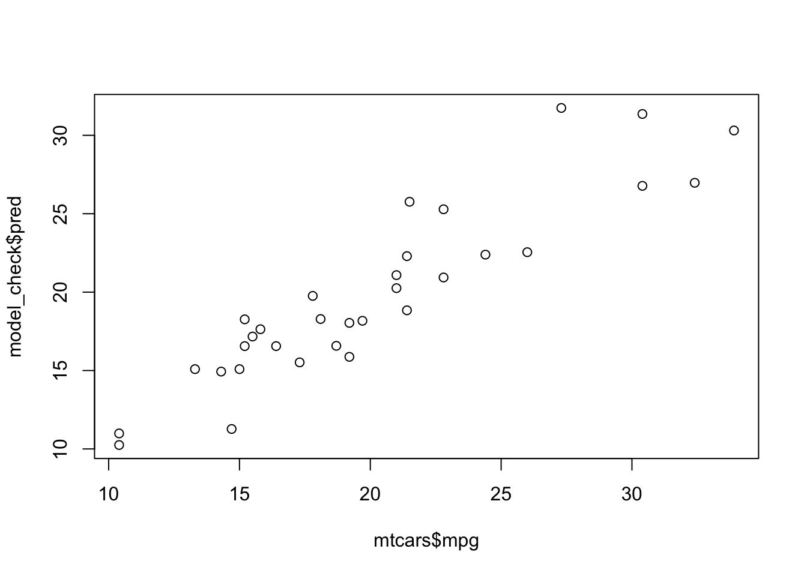
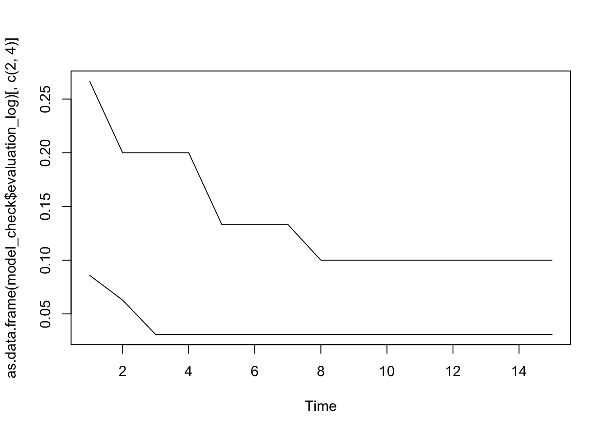

## Warning: package 'xgboost' was built under R version 3.3.2Modeling of data patterns is a broad and deep topic that we can barely scratch in an intro class. We will concentrate on a couple types of models, aiming at prediction, on how to visualize models, and how to check predictive accuracy. The primary package we will use is xgboost.
Predictive task
We consider a situation when we have a data frame of data, with \(n\) rows and \(p\) columns. We identify one column as a response variable and treat other variables as predictors. In addition, we distinguish between quantitative variables, for example, time or salary or rate of return, and categorical variables, like political affiliation or gender or loan approval status. The later distinction is necessary to make good choices about what type of R data is appropriate for different types of information. This may require some data preparation, but ultimately all information will be stored as double.
Given data and our choices about response / predictor variables, our task is to find a predictive function that takes values of predictors and returns a value close to the observed response variable. Here is how we formulate it mathematically.
Lets consider a row \(i \in \{1, 2, \dots, n\}\) of a data frame, where one value is a response variable \(y_i \in \mathbb R\) and remaining values are predictors \(x_{i1}, x_{i2}, \dots, x_{ip-1} \in \mathbb R ^ {p-1}\), hence accounting for the \(p\) columns. We assume
- that \((y_i, x_{i1}, \dots, x_{ip-1})\) have been sampled independently from a probability distribution \(P(y, x_{1}, \dots, x_{p-1})\) that characterizes variation in each variable and dependencies among them, meaning data is representative,
- that there is a function \(g(x_{1}, \dots, x_{p-1})\) that provides a true description of how \(mean(y)\) dependends on predictors, meaning there is a dependency of response on predictors.
The first two assumptions are theoretical. To attempt to solve the problem, we also need practical assumptions that we are in control of and are primary components of what makes up a predictive model methodology:
- that we can define a set of possible models, \(\{f(x_{1}, \dots, x_{p-1}, \theta) : \theta \in \Theta\ \subset \mathbb R\}\), such that there is at least one function in a set of possible functions that approximates the true relationship, \(f(x_{1}, \dots, x_{p-1}, \theta ^ *)\), meaning we can find an adequate model of the true relationship
- that we can find a function to quantify overall predictive accuracy \(\sum_{i=1}^n L(y_i, f(x_{1}, \dots, x_{p-1}, \theta))\), called a loss function, meaning we can quantify discrepancy between truth and approximation
- that we can obtain an estimation algorithm that searches through the possible values of \(\theta \in \Theta\), which modifies how response variable and predictors are related, so that we can maximize overall predictive accuracy, meaning we can solve \(\mathrm{argmin}_{\theta \in \Theta}\ L(\theta)\) within computational, statistical, and organizational constraints
- that we can come up with an interpretable metric of accuracy to characterize our model, meaning we can summarise how well it does, compare it to other models and communicate it to someone else
The above points are very general, and we need to specify some details to actually make this doable. First, we are going to use a set of functions and an estimation algorithm offered by package xgboost, which iteratively builds step-wise functions, called trees, and combines them by averaging their outputs. We could consider other function sets like planes, quadratics, exponential curves, but all of these are very restrained and it becomes harder to manually put these together in a multivariate case, so we will just rely on a very general set of function from xgboost that can approximate any of those and more.
Secondly, we are going to use mean squared error to quantify mean predictive error of a model that predicts a quantitative response, defined as
\[\sqrt{\frac{1}{n}\sum_{i = 1}^n(y_i - f(x_{1}, \dots, x_{p-1}, \theta))^2}\] and misclassification rate for a categorical response, defined as \(\frac{1}{n}\sum_{i = 1}^n \delta(y_i \neq f(x_{1}, \dots, x_{p-1}, \theta))\), where \(\delta(condition)\) is 1 if true and 0 if false.
Examples
To follow along run these commands:
install.packages("xgboost")
library(xgboost)Lets look at some examples. mtcars serves as a good example:
head(mtcars)## mpg cyl disp hp drat wt qsec vs am gear carb
## Mazda RX4 21.0 6 160 110 3.90 2.620 16.46 0 1 4 4
## Mazda RX4 Wag 21.0 6 160 110 3.90 2.875 17.02 0 1 4 4
## Datsun 710 22.8 4 108 93 3.85 2.320 18.61 1 1 4 1
## Hornet 4 Drive 21.4 6 258 110 3.08 3.215 19.44 1 0 3 1
## Hornet Sportabout 18.7 8 360 175 3.15 3.440 17.02 0 0 3 2
## Valiant 18.1 6 225 105 2.76 3.460 20.22 1 0 3 1mpg, miles per gallon, is a quantitative variable while am, status of automatic transmission, is categorical. Suppose mpg is the response variable \(y\), then our task is to estimate an unknown mathematical function \(g(x_{cyl}, x_{disp},...,x_{carb})\) that will take values of the other 10 variables in the table or similar values, and will output a predicted value of mpg \(\hat y\) that is close to the makes of cars we see in the table, but also close to new, unseen car makes, so \(\hat y \approx y\). Outputs of \(f(\dots)\) will be quantitative, continuous, positive; this is called a regression model. If we are successful, then we can predict mpg given values of the other variables.
This expresses our choices about response and predictors:
response <- "mpg"
preds <- setdiff(names(mtcars), response)xgboost has a special data structure xgb.DMatrix to which we pass our variables:
data <- xgb.DMatrix(data = as.matrix(mtcars[preds]), label = mtcars[[response]])Next, we estimate a predictive model. First we need to specify what kind of predictive problem is it, regression or classification?
params <- list(objective = "reg:linear", max.depth = 2)Here "reg:linear" means regression, so predicting a quantitative response variable. We will see other objective settings when doing classification. Then we can run the estimation algorithm to obtain a candidate model:
model <- xgboost(data, nrounds = 15, params = params)## [1] train-rmse:14.931315
## [2] train-rmse:10.956806
## [3] train-rmse:8.086657
## [4] train-rmse:6.014954
## [5] train-rmse:4.524509
## [6] train-rmse:3.452733
## [7] train-rmse:2.699348
## [8] train-rmse:2.160561
## [9] train-rmse:1.783578
## [10] train-rmse:1.530202
## [11] train-rmse:1.352114
## [12] train-rmse:1.221488
## [13] train-rmse:1.125132
## [14] train-rmse:1.050767
## [15] train-rmse:0.993811So, we have a model. How well does it do? This is a problem of diagnostics. We can use quantitative and visual methods to establish the predictive accuracy of our model. The important thing is to do model building and checking on different parts of a dataset, sometimes called train and test data. This way information for modeling and evaluating its accuracy is distinct. This is important for reducing or eliminating the bias that arises when you build a solution and then test it against the same data. Given that the solution is obtained by searching for a function that closely resembles patterns in the data, it should not be surprising if such a function shows high predictive accuracy - it was meant to.
Luckily, xgboost provides a special function to handle data partitions automatically. The technique is called cross-validation. Data gets partitioned into non-overlapping subsets. A model is found for all but one subset and its accuracy is quantified against the held-out subset. This allows to control for bias in results. Then we repeat the same process by holding out a different dataset and estimating a model on the remaning. This is repeated until each dataset has served as a test dataset.
Here is how you do it in xgboost:
model_check <- xgb.cv(data = data, nrounds = 15, params = params,
nfold = 5, prediction = TRUE, verbose = FALSE)## ##### xgb.cv 5-folds
## iter train_rmse_mean train_rmse_std test_rmse_mean test_rmse_std
## 1 14.9878500 0.31380895 15.032428 1.3405395
## 2 11.0812408 0.20888959 11.157466 1.1113524
## 3 8.2421278 0.12427311 8.408589 0.8754797
## 4 6.1807056 0.07131542 6.455044 0.7856974
## 5 4.6787872 0.04965321 5.017423 0.7272057
## 6 3.5850778 0.05129103 3.997474 0.6469281
## 7 2.7906300 0.06210156 3.400866 0.6075206
## 8 2.2131812 0.06280777 3.001698 0.5637378
## 9 1.7991018 0.06750369 2.748674 0.5096921
## 10 1.5036920 0.07305091 2.595312 0.4707660
## 11 1.2832924 0.07423395 2.517527 0.3743411
## 12 1.1252114 0.07913846 2.466789 0.3799666
## 13 0.9963048 0.07112970 2.431705 0.3670777
## 14 0.9108604 0.07362564 2.404471 0.3923193
## 15 0.8446332 0.07651620 2.376313 0.4261411Output of xgb.cv contains summary statistics on train and test data, and also predictions on the hold-out data. In addition to summary statistics, we can also do a few visualizations of the full pattern of predictive accuracy.
plot.ts(as.data.frame(model_check$evaluation_log)[,c(2, 4)], plot.type = "single") The plot above shows mean predictive error in the model over training iterations. The gap between train and test shows the slight bias towards predicting train rather than test data. A good model should have both values low and not too far from each other.
We can also examine residuals - observed minus predicted values - by plotting their histogram:
hist(mtcars$mpg - model_check$pred) A good model should have this centered around 0.
We can also check for a relationship between observed and predicted values. For a good model, these should be highly correlated:
plot(mtcars$mpg, model_check$pred)
All the summary statistics and plots look pretty good. We can use the model we build to generate predictions, for old or new inputs. We would only need to convert data with the predictors into a xgb.DMatrix. Here is an example using the predict function from base R on the full dataset:
predict(model, data)## [1] 20.28938 20.28938 22.15593 20.14867 17.01779 18.76633 14.85491
## [8] 23.08412 22.15593 18.94006 18.94006 16.05549 16.05549 16.05549
## [15] 10.59728 10.59728 14.73103 30.88917 30.01993 32.20821 22.15593
## [22] 16.50219 16.53521 14.69125 17.01779 28.23297 25.88072 28.94273
## [29] 15.72165 20.09435 14.69125 22.15593Similarly, if we used am as the response variable, which is categorical, the task is also to find a predictive function, with the only difference from mpg is that the output should be categorical, perhapse 1 for automatic and 0 manual, and no other possible values. By outputing only a few categorical values is the reason why such a predictive function is often called a classifier.
We can use xgboost to solve this problem, too. Lets first setup our variables and data.
response <- "am"
preds <- setdiff(names(mtcars), response)
data <- xgb.DMatrix(data = as.matrix(mtcars[preds]), label = mtcars[[response]])The classification problem is different and requires a different way to capture a discrepancy between a candidate model and the underlying true function. Here we use "binary:logistic":
params <- list(objective = "binary:logistic", max.depth = 2)
model <- xgboost(data, nrounds = 15, params = params)## [1] train-error:0.093750
## [2] train-error:0.062500
## [3] train-error:0.031250
## [4] train-error:0.031250
## [5] train-error:0.031250
## [6] train-error:0.031250
## [7] train-error:0.031250
## [8] train-error:0.031250
## [9] train-error:0.031250
## [10] train-error:0.031250
## [11] train-error:0.000000
## [12] train-error:0.031250
## [13] train-error:0.000000
## [14] train-error:0.031250
## [15] train-error:0.031250Given our model, we once again ask how well it can do predict under new conditions.
model_check <- xgb.cv(data = data, nrounds = 15, params = params,
nfold = 5, prediction = TRUE, verbose = FALSE)## ##### xgb.cv 5-folds
## iter train_error_mean train_error_std test_error_mean test_error_std
## 1 0.0858976 0.02855265 0.2666668 0.2260777
## 2 0.0628206 0.02002597 0.2000000 0.1943650
## 3 0.0307696 0.01538480 0.2000000 0.1943650
## 4 0.0307696 0.01538480 0.2000000 0.1943650
## 5 0.0307696 0.01538480 0.1333334 0.1247218
## 6 0.0307696 0.01538480 0.1333334 0.1247218
## 7 0.0307696 0.01538480 0.1333334 0.1247218
## 8 0.0307696 0.01538480 0.1000000 0.1333333
## 9 0.0307696 0.01538480 0.1000000 0.1333333
## 10 0.0307696 0.01538480 0.1000000 0.1333333
## 11 0.0307696 0.01538480 0.1000000 0.1333333
## 12 0.0307696 0.01538480 0.1000000 0.1333333
## 13 0.0307696 0.01538480 0.1000000 0.1333333
## 14 0.0307696 0.01538480 0.1000000 0.1333333
## 15 0.0307696 0.01538480 0.1000000 0.1333333plot.ts(as.data.frame(model_check$evaluation_log)[,c(2, 4)], plot.type = "single")
When dealing with a classification problem, instead of residuals, it is typicaly to see which classes a model gets well, and how often, using what is called a confusion matrix. Basically, we count how many correct and incorrect predictions are made and put them into a table. Note that predictions from the model are actually probabilities, and to get a class prediction we need to threshold a probability. It is typical to use .5.
table(pred = as.integer(model_check$pred > .5), obs = mtcars$am)## obs
## pred 0 1
## 0 18 2
## 1 1 11We the model can discriminate between automatic and manual pretty well, only confusing the two sometimes.
This example showed a two-class prediction problem, but xgboost can handle multi-class problem, too. We just need to adjust our parameters by setting objective argument by to "multi:softmax" and num_class to number of classes we are dealing with. Lastly, the classes should be represented with integers, starting from 0 and going to num_class - 1.